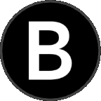
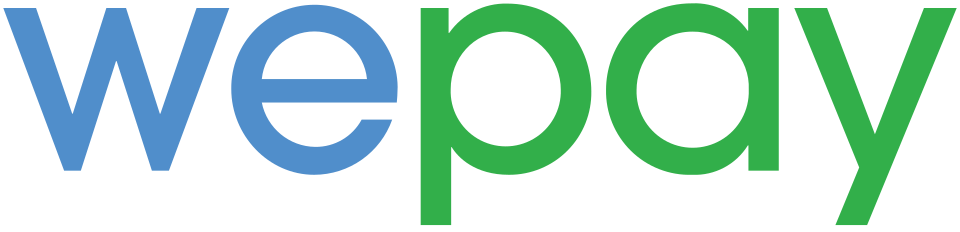

Hello, I'm Annie. I design monetization products at Instagram. For 15+ years, I've been turning ambiguous, high-stakes problems into products people actually use.
Background


With 15+ years across enterprise advertising, payments, and internal platforms, I've built a career on products where the stakes are real and the systems are complex. I'm currently a Product Designer at Instagram, leading design for Boost across mobile and web. Previously I designed billing and payments systems at Facebook, worked on the Core Terminal at Bloomberg, and led design across e-commerce, payments, and IoT at Jet.com, WePay, and Samsung SmartThings. I trained as both an engineer and an artist — a Computer Science degree and a Fine Art degree — before completing my M.S. in Human-Computer Interaction at Carnegie Mellon. I live in San Diego, where the sun makes it very hard to stay inside.